바다는 무엇을 따라야 하는가 — 연재 4회
문화 ․ 생활
바다는 무엇을 따라야 하는가?Ⅳ
Maritime space follows something?Ⅳ
본 기고를 통해 해양공간환경의 구성에 있어 접근성(Accessibility), 정체성(Locality), 연계성(Linkage), 사용성(Mixed-Use)의 4가지 요소를 통해 작금에 이뤄지고 있는 디자인 트렌드들을 살펴보고 있습니다. 그런데 다시 한번 우리가 왜 해양공간에 대해 디자인적 관심을 가지고 바라봐야 하는가에 대한 중요성을 공유하려 합니다.
작금의 해양공간은 글로벌 경제위기와 육역자원의 고갈로 인해 경제·환경적 가치를 지닌 대상으로서 새로운 국가 성장 동력으로 주목받고 있습니다. 이러한 흐름에 따라 천연자원의 채취·육성·가공 및 항만운영에 집중되었던 해양산업 또한 에너지원, 신물질 개발과 같은 과학기술 분야와 해양 스포츠, 비즈니스, 마리나, 쇼핑, 교육과 같은 문화산업 영역으로 확장되어 가고 있습니다. 국민소득 및 여가시간의 증가에 따라 해양 관광, 레저 등 해양활동에 대한 수요도 급증하고 있으며 그 수요를 충당할 공간자원도 풍부하여 국내 해안은 길이만 12,733km에 이르며 3천3백여 개의 도서와 동서남해안별 독특한 해안선을 지니고 있어 활용할 만한 공간자원이 무궁무진합니다. 그러나 해양공간의 활용방법은 국외와 비교하여 볼 때 다양성이나 창의적인 측면에서 일부 부족한 면이 있다고 생각됩니다. 무엇보다도 해양 공간환경에 대한 디자인적인 접근과 연구보다는 전통적 해양산업이나 에너지 개발에 대해 집중적으로 이루어지고 있으며 해양 디자인은 여전히 레저 용품의 외형이나 기능 강화를 위한 부차적 작업으로만 인식되어 공간에 대한 디자인적 측면의 시도가 활발히 진행되지 않고 있습니다. 국내 해양디자인 관련 국제컨퍼런스의 내용들을 살펴보더라도 해양 디자인은 주로 조선 기자재. 레저 장비와 관련된 외형 개발로서 세부적으로는 요트, 웨이크 보드, 헬맷이나 브랜드 상품개발 과정으로 소개되고 있습니다. 물론 중요한 부분이지만 공간 환경적인 디자인 접근은 미비한 상태라고 볼 수 있습니다. 더욱이 해양 조선사업에 한정된 디자인 기여도 마저도 그 정도가 8.3%에 그쳐 국외의 해양분야 디자인 기여도 34.7%, 국내 타 산업분야에서의 디자인 기여도 평균 40%의 수준에 못 미치는 실정이며 자동차, IT산업, 섬유패션산업 분야와 비교했을 때 해양 영역에 대한 디자인의 관련성은 극히 미비하다고 판단할 수 있습니다.
여러분야에서 디자인 개념이 변화하고 육역에서 공공적 디자인에 대한 관심이 확대되었음에도 불구하고 해양 영역에서는 디자인이 학문적으로나 상업적으로 제품 외형개발 행위에 국한되어 인식되고 있으므로 어느 때보다 해양 공간환경의 가치에 주목하는 현 시점에서 해양 디자인을 모든 해양에서의 활동에 대한 문화적·공공적 가치 향상을 위한 창의적 대안과정으로 바라보기 위한 명확한 개념 정립이 필요합니다. 이에 본 기고를 통해 국내외의 사례를 살펴보면서 여러 가치와 가능성에 대해 탐구해보고 있습니다.
1.일본 도쿄 리버시티21(river city 21)
리버시티21은 도쿄 스미다강 하구부의 삼각주에 위치한 창고·공장부지 재생화 과정에서 수변 주거지역으로 탄생된 프로젝트입니다.
대상지인 삼각주는 오키와바타 리버시티21 개발사업 대상지인 츠쿠다 섬과 이시카와 섬 일대로서 창고와 공장 등에 대한 기능 저하, 산업 쇠퇴 등에 따른 기능 전환이 필요하고 과거 수운시설이 다수 입지해 있었으나 육상 운송 시스템 변화와 해안도로 정비에 따라 용도 전환의 필요성이 대두되어 재생사업이 진행된 곳입니다.
주요 특징을 살펴보면 주체 간의 통합, 일체형 공간 조성, 직각형 단차 아닌 경사형 등 통합설계에 의한 수변공간의 공공성 확보와 본류·지류의 하천 특성을 반영하여 강의 폭에 따라 각기 다른 경관디자인을 적용한 것을 들 수 있습니다.
<그림 1> 리버시티 21 전경 < IMAGE : www.tokyoapartments.jp\>
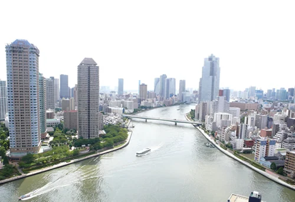
<그림 2> 리버시티 21 전경 < IMAGE :>
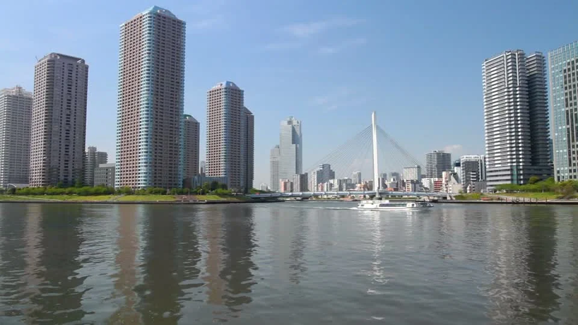
<그림 3> 스미다강과 제방 전경 < IMAGE : http://commons.wikimedia.org >
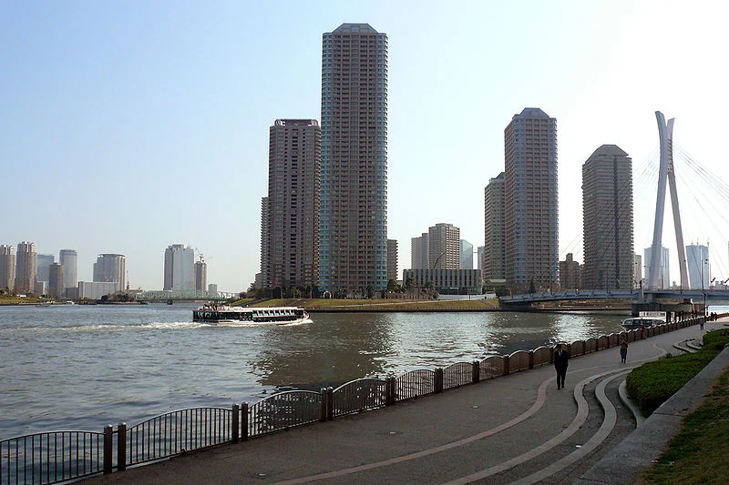
도쿄에서는 해수면 상승과 홍수피해의 방지를 위해 주요 하천의 방조제, 호안 등의 치수시설을 정비하여 왔으나 기존의 콘크리트 직립제방 등의 시설의 단점인 도시와 하천의 분절, 오탁 등의 문제가 생김에 따라 이를 해결함과 동시에 방재에도 대비할 수 있는 경사형 제방으로 개축하는 안을 고안하였습니다. 구조적으로 제약이 큰 본류쪽 수변공간은 인공형 제방 조성, 지류쪽은 자연형 완경사 제방을 조성하여 이로써 형성된 넓은 활용 용지를 녹지, 공원화하였으며 슈퍼제방(완경사 제방)에 의한 치수안정성 및 접근성, 개방감 확보하였습니다.
슈퍼제방은 1980년부터 시작되어 온 '완경사형 제방정비사업'에서 시작되었으며 1985년 이후 안전성, 용지확보의 효율성이 더욱 향상된 슈퍼제방 정비사업을 시행하였습니다. 이를 위해 ‘스미다강 제방문제 연구조사 위원회’가 발족하여, 완경사형 제방을 주로 한 친수제방을 실현하고 스미다강에 면한 완경사형 제방의 구체화를 위하여 구조 및 수리상의 검토를 거쳐, 표준구조를 결정함으로서 슈퍼제방의 완성을 보았습니다. 이로 인해 홍수, 침수 위험방지 및 기존 콘크리트 직립제방으로 인한 도시와 하천의 단절, 수질 오탁문제를 해결하였습니다.
<그림 4> 슈퍼제방 < IMAGE : http://tokuhain.chuo-kanko.or.jp\>
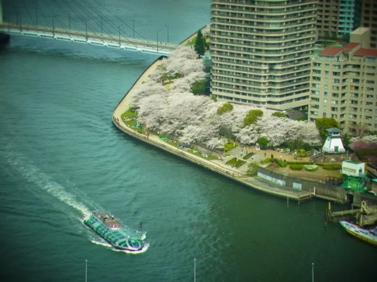
2.시드니 본다이 비치(Bondi Beach) 어린이 해수욕장 보호망
'Bondi Bathers Surf Lifesaving Club'은 세계에서 가장 처음 창설된 인명 구조 클럽으로서 1907년 창설되었으며, 창설 이후로 인명구조와 관련된 많은 아이템들을 발명하였습니다.
<그림 5> 어린이 해수욕장 보호구역 < IMAGE : http://icebergs.com.au\>
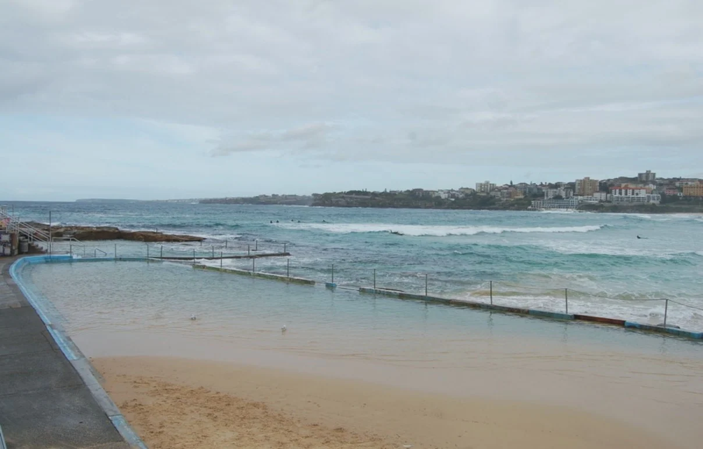
<그림 6> 서핑 교육을 받는 학생들 < IMAGE : http://icebergs.com.au\>
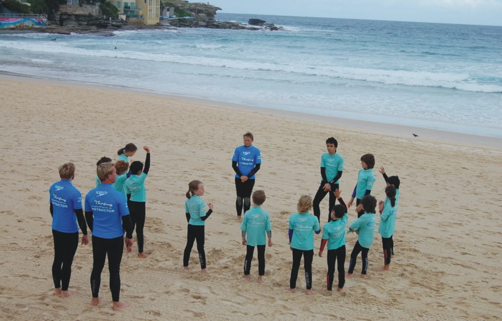
본다이 비치는 파도가 높아 서핑을 하기에 적합하여 많은 서퍼들이 매년 많이 찾는 지역이므로 보호 안전 시설물 관리에 중심을 두었으며 해수욕장 지역 특성상 해변가의 파도가 높아 어린이 해수욕장에 보호구역을 설치하였습니다. 가끔씩 상어가 출몰하여 이에 대한 안전사고 방지를 위한 안전 그물을 물 밑에 설치하여 시드니 본다이 비치의 위험한 환경속에 안전한 수영장 환경을 구축하여 사용성을 극대화 하였습니다.
<그림 7> 바다물을 막아 만든 아이스버그 수영장 < IMAGE : http://icebergs.com.au\>
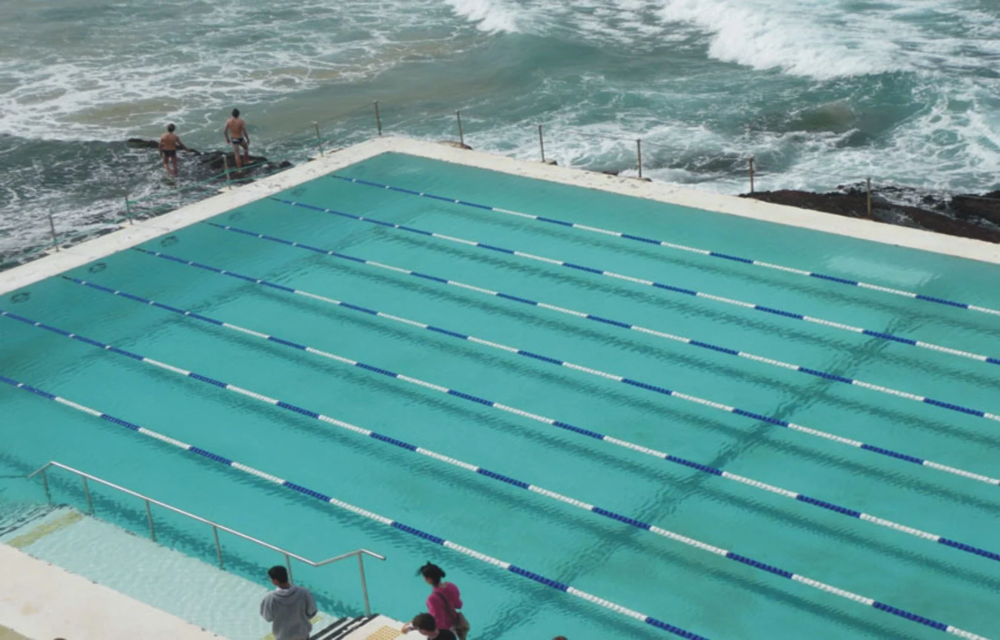
<그림 10> 옛 요코하마항 피어 < IMAGE : >
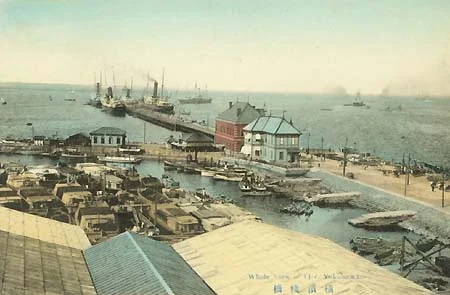
<그림 8> 본다이 비치의 아이스버그 수영장 < IMAGE : http://icebergs.com.au\>
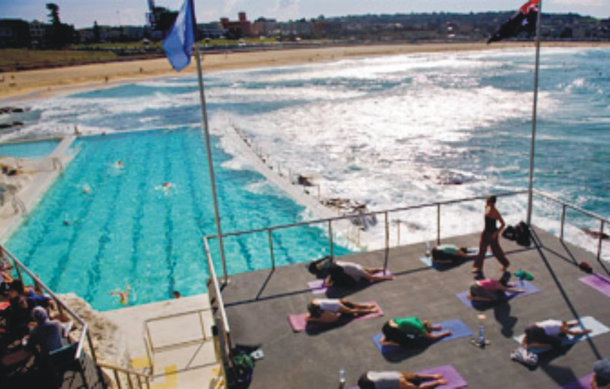
<그림 9> 본다이 비치와 아이스버그 수영장 전경 < IMAGE : http://mattlauder.com.au\>
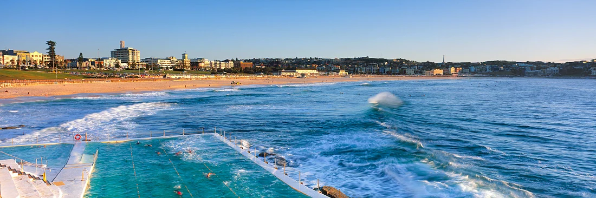
3.일본 요코하마시 오오산바시 국제 여객터미널
일본 요코하마시 오오산바시 국제 여객터미널은 요코하마항의 관문으로서 대형 외국선이 기항하는 터미널로서 2,000㎡의 홀로 구성되어 있습니다. 터미널이 설치되어 있는 오산바시 피어는 1880년대 후반에 조성된 가장 오래된 잔교로서 리모델링 필요에 따라 1987년 설계 시작, 2002년 마무리하였고 그 규모는 7만 톤급 선박을 동시에 두 척 댈 수 있는 규모입니다.
요코하마 국제 여객터미널은 국제 공모를 통해 영국 FOA의 안이 당선되었는데 그 주제는 동선의 Weaving에 의한 오리가미 즉, '종이접기' 컨셉 이었으며 이 오리가미 컨셉을 통한 지표면의 주름은 다양한 공간을 창출, 통로를 만들어주며 구조적으로도 안전함을 확보하였습니다.
공간구성은 로비, 부스, 카페는 2층, 1층 주차장, 옥상은 목재마감 전망 데크로 구성, 안전 위한 가드레일, 동선의 연속적인 특징을 지녔습니다.
<그림 11> 요코하마항 터미널 전경 < IMAGE : >
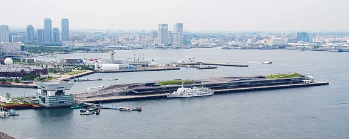
<그림 12> 요코하마항 터미널 전경 < IMAGE : >
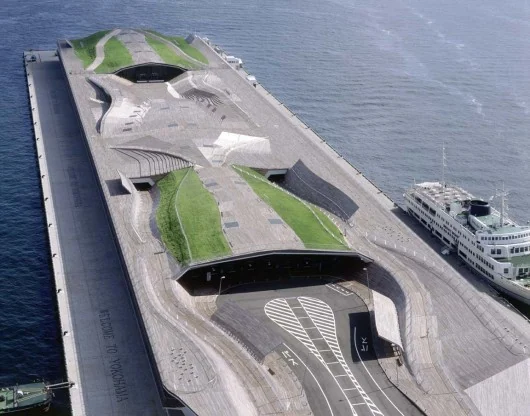
<그림 13> 요코하마항 터미널 내부 전경 < IMAGE : www.thebeautyoftransport.wordpress.com\>
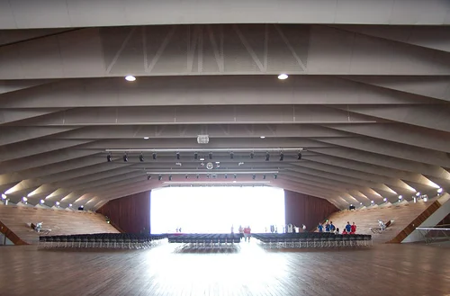
4.일본 요코하마시 미나토 미라이 21지구
일본 요코하마시 미나토 미라이 21지구는 도쿄 만에 인접한 임해도심부를 분단하는 위치에 있던 조선소 등을 이전시켜서 생긴 토지에 새로 매립한 토지를 추가하여 조성한 근대적 도시로서 택지 87ha, 도로 및 철로용지 42ha, 공원과 녹지 46ha, 부두용지 11ha로 총 186ha의 규모를 지니고 있습니다.
<그림 14> 미나토 미라이 21지구 전경 < IMAGE : www.minatomirai21.com\>
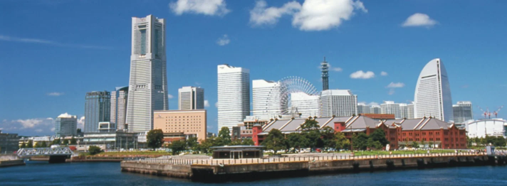
바다 등의 주변 환경과 중앙 지구, 신항 지구 각각 지구의 특성에 맞추어 도시가 조성되었으며 쾌적하게 일하는 공간, 레저와 쇼핑을 즐기는 공간, 안전하고 풍족하게 생활하는 공간 등을 목표로 디자인되었습니다. 항만기능의 질적 전환을 목표로 공원과 녹지, 워트프론트 비즈니스 공간 등 인프라를 갖추고 있습니다.
중앙지구는 물과 초록, 스카이라인, 거리와 전망, 액티비티 플로어, 색채, 광고물 규제 등의 기본적 디자인에 대한 지정을 중심으로 이루어져 있고 신항지구는 역사와 경관을 살린 재개발, 아카렌가 창고로 대표되는 옛 항구 풍경과 돌계단 등으로 역사 계승의 개념으로 디자인되었습니다.
<그림 15> 미나토 미라이 21지구 전경 < IMAGE : >
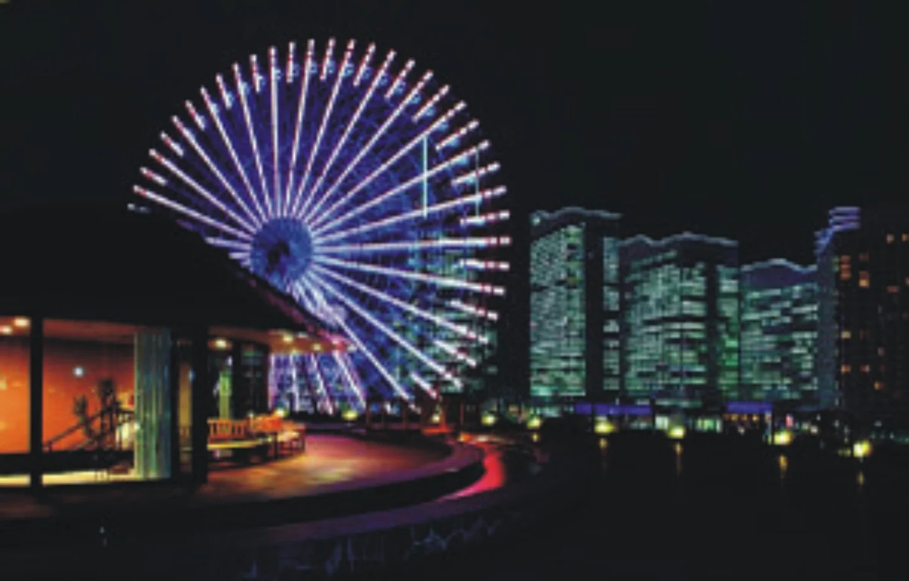
<그림 16> 범선 닛폰마루 < IMAGE : >
<그림 17> 퍼시피코 요코하마 < IMAGE : >
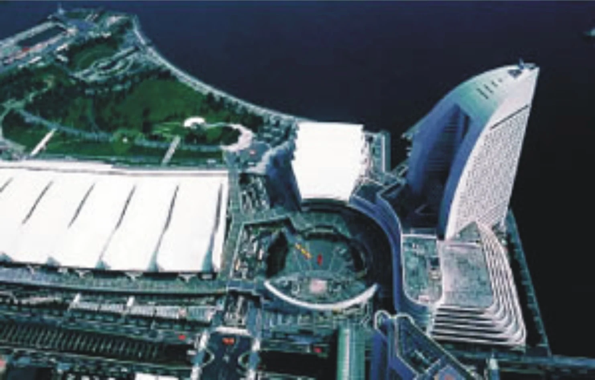
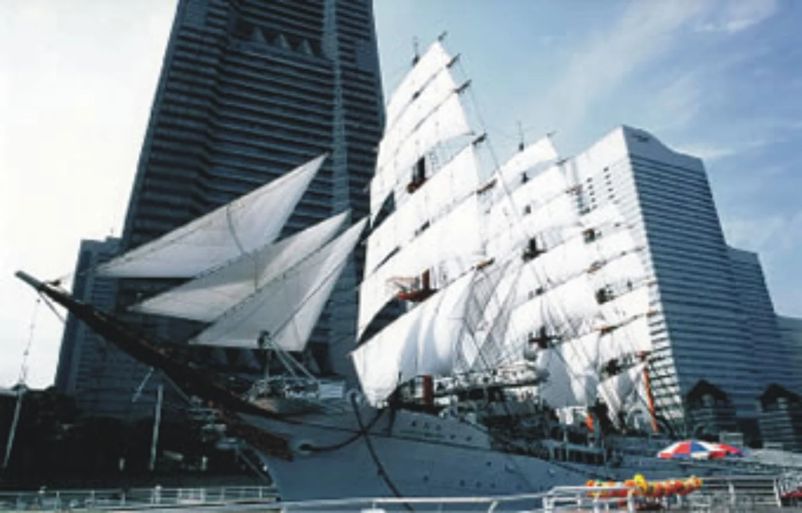
<그림 18> 미나토 미라이 21지구 신항지구 전경 < IMAGE : 경인일보 >
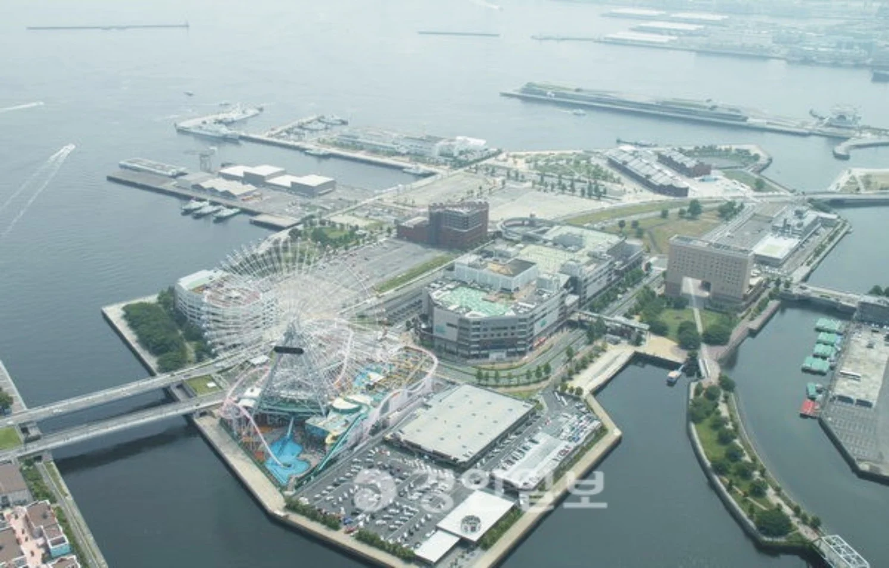
<그림 19> 미나토 미라이 21지구 야경 < IMAGE : www.welcome.city.yokohama.jp >
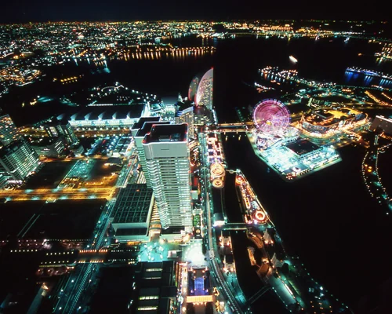
[참고문헌]
국토해양부외, ｢해양 공간의 가치 창출을 위한 해양디자인기술 개발 기획연구｣, 2012
이현성외, ｢해양공간디자인｣, 미세움, 2013.
㈜휴앤즈, 「공공디자인 선진사례 연구답사 제5차 자료」, 한국디자인진흥원, 2008.
진양교, 「Journey to the Memory and Symbol : 43 도시재생공원」, 조경, 2010.
권영상·조민선, 「수변공간 활성화를 위한 도시계획 및 설계방향」, 건축도시공간연구소, 2010.
2016년 봄호
1
항 만
2